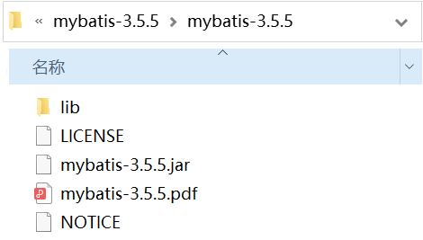
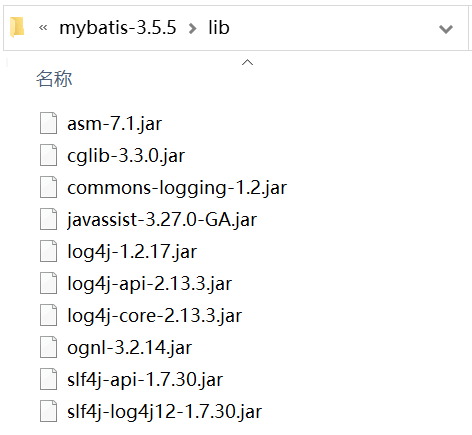

MyBatis下载（多种方式）
在实际开发之前，我们必须为 MyBatis 搭建适当的环境。下面介绍 MyBatis 的下载以及目录结构。
如果您打不开网站或下载进度较慢，可以通过 https://github.com/mybatis/mybatis-3/releases 网址下载。
如果您使用的 Maven，那么 pom.xml 文件内容如下（根据自己的版本修改相应的内容）。
在使用 MyBatis 框架时，需要把它的核心包和依赖包引入到应用程序中。如果是 Web 应用，只需将核心包和依赖包复制到 /WEB-INF/lib 目录中。
MyBatis下载
在 MyBatis 的官方网站 http://mybatis.org，可以下载到最新版本的 MyBatis，本教程使用版本为 MyBatis 3.5.5。如果您打不开网站或下载进度较慢，可以通过 https://github.com/mybatis/mybatis-3/releases 网址下载。
如果您使用的 Maven，那么 pom.xml 文件内容如下（根据自己的版本修改相应的内容）。
<dependencies>
<dependency>
<groupId>org.mybatis</groupId>
<artifactId>mybatis</artifactId>
<version>3.5.5</version>
</dependency>
<dependency>
<groupId>mysql</groupId>
<artifactId>mysql-connector-java</artifactId>
<version>5.1.49</version>
</dependency>
</dependencies>
MyBatis文件目录结构
下载完成后，mybatis-3.5.5.zip 解压后目录结构如下。

上图中的 mybatis-3.5.5.jar 是 MyBatis 的核心包，mybatis-3.5.5.pdf 是 MyBatis 官方使用手册，lib 文件夹下的 jar 文件是 MyBatis 的依赖包，如下图所示。

上图中 jar 文件说明如下。| 名称 | 说明 |
|---|---|
| asm-7.1.jar | 操作Java字节码的类库 |
| cglib-3.3.0.jar | 用来动态继承Java类或实现接口 |
| commons-logging-1.2.jar | 用于通用日志处理 |
| javassist-3.27.0-GA.jar | 分析、编码和创建Java类库 |
| log4j-1.2.17.jar | 日志系统 |
| log4j-api-2.13.3.jar | log4j到log4j2的桥接包 |
| log4j-core-2.13.3.jar | log4j到log4j2的桥接包 |
| ognl-3.2.14.jar | OGNL的类库 |
| slf4j-api-1.7.30.jar | 日志系统的封装，对外提供统一的API接口 |
| slf4j-log4j12-1.7.30.jar | slf4j 对 log4j 的相应驱动，完成 slf4j 绑定 log4j |
在使用 MyBatis 框架时，需要把它的核心包和依赖包引入到应用程序中。如果是 Web 应用，只需将核心包和依赖包复制到 /WEB-INF/lib 目录中。
关注公众号「站长严长生」，在手机上阅读所有教程，随时随地都能学习。内含一款搜索神器，免费下载全网书籍和视频。

微信扫码关注公众号